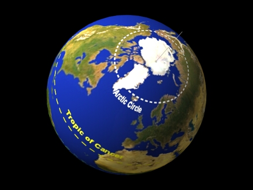

The Arctic Circle is a parallel of latitude on the Earth at approximately 66.5 degrees north from the equator. On the day of the northern summer solstice (around June 22 each year), an observer on the Arctic Circle will see the Sun above the horizon for a full 24 hours. Observers further north than the Arctic Circle will see the Sun remain above the horizon for many days, and at the north pole, there is a six-month ‘day’ that starts on the vernal equinox changing to a six-month ‘night’ on the autumnal equinox. The 66.5 degree angle comes from the tilt of the Earth’s rotation axis (23.5°), such that 90° – 23.5° = 66.5°.